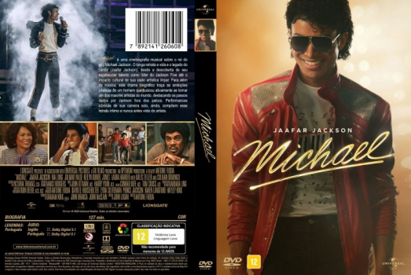

![link to Michael [Autorado] on Rotten Tomatoes](../img/tomatoes.png)
![link to Michael [Autorado] on TheMovieDb](../img/themoviedb.png)

País:United States, 128 minutos
Idiomas falados:Inglês, Português
Gênero(s):Música, Drama
Diretor(s):Antoine Fuqua
Escritor(es):John Logan
Codec:MPEG-2 (DVD)
Número: 5939


Certificado:12
Sinopse:
Michael é uma cinebiografia musical sobre o rei do pop Michael Jackson. O longa retrata a vida e o legado do cantor (Jaafar Jackson), desde a descoberta de seu espetacular talento como líder do Jackson Five até o impacto cultural de sua visão artística ímpar. Para além da música, este drama biográfico traça as ambições criativas de um homem que buscou ativamente se tornar um dos maiores artistas do mundo, destacando os passos dados por Jackson fora dos palcos. Performances icônicas de sua carreira solo, ainda, compõem esse retrato íntimo e nunca antes visto do artista.
Elenco:
Tipo de mídia: DVD5,
Legendas: Português, Sem Legendas
Alugado: Não
Tela: Anamorphic Widescreen